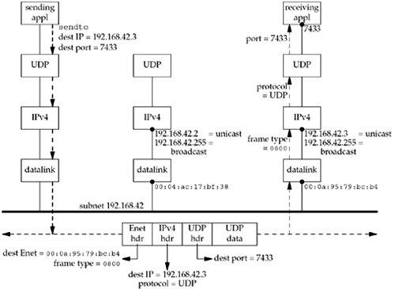
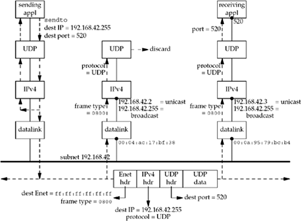

| [ Team LiB ] |
|
20.3 Unicast versus BroadcastBefore looking at broadcasting, let's make certain we understand the steps that take place when a UDP datagram is sent to a unicast address. Figure 20.3 shows three hosts on an Ethernet. Figure 20.3. Unicast example of a UDP datagram. The subnet address of the Ethernet is 192.168.42/24 with 24 bits in the network mask, leaving 8 bits for the host ID. The application on the left host calls sendto on a UDP socket, sending a datagram to 192.168.42.3, port 7433. The UDP layer prepends a UDP header and passes the UDP datagram to the IP layer. IP prepends an IPv4 header, determines the outgoing interface, and in the case of an Ethernet, ARP is invoked to map the destination IP address to the corresponding Ethernet address: 00:0a:95:79:bc:b4. The packet is then sent as an Ethernet frame with that 48-bit address as the destination Ethernet address. The frame type field of the Ethernet frame will be 0x0800, specifying an IPv4 packet. The frame type for an IPv6 packet is 0x86dd. The Ethernet interface on the host in the middle sees the frame pass by and compares the destination Ethernet address to its own Ethernet address 00:04:ac:17:bf:38). Since they are not equal, the interface ignores the frame. With a unicast frame, there is no overhead whatsoever to this host. The interface ignores the frame. The Ethernet interface on the host on the right also sees the frame pass by, and when it compares the destination Ethernet address with its own Ethernet address, they are equal. This interface reads in the entire frame, probably generates a hardware interrupt when the frame is complete, and the device driver reads the frame from the interface memory. Since the frame type is 0x0800, the packet is placed on the IP input queue. When the IP layer processes the packet, it first compares the destination IP address (192.168.42.3) with all of its own IP addresses. (Recall that a host can be multihomed. Also recall our discussion of the strong end system model and the weak end system model in Section 8.8.) Since the destination address is one of the host's own IP addresses, the packet is accepted. The IP layer then looks at the protocol field in the IPv4 header, and its value will be 17 for UDP. The IP datagram is passed to UDP. The UDP layer looks at the destination port (and possibly the source port, too, if the UDP socket is connected), and in our example, places the datagram onto the appropriate socket receive queue. The process is awakened, if necessary, to read the newly received datagram. The key point in this example is that a unicast IP datagram is received by only the one host specified by the destination IP address. No other hosts on the subnet are affected. We now consider a similar example, on the same subnet, but with the sending application writing a UDP datagram to the subnet-directed broadcast address: 192.168.42.255. Figure 20.4 shows the arrangement. Figure 20.4. Example of a broadcast UDP datagram. When the host on the left sends the datagram, it notices that the destination IP address is the subnet-directed broadcast address and maps this into the Ethernet address of 48 one bits: ff:ff:ff:ff:ff:ff. This causes every Ethernet interface on the subnet to receive the frame. The two hosts on the right of this figure that are running IPv4 will both receive the frame. Since the Ethernet frame type is 0x0800, both hosts pass the packet to the IP layer. Since the destination IP address matches the broadcast address for each of the two hosts, and since the protocol field is 17 (UDP), both hosts pass the packet up to UDP. The host on the right passes the UDP datagram to the application that has bound UDP port 520. Nothing special needs to be done by an application to receive a broadcast UDP datagram: It just creates a UDP socket and binds the application's port number to the socket. (We assume the IP address bound is INADDR_ANY, which is typical.) On the host in the middle, no application has bound UDP port 520. The host's UDP code then discards the received datagram. This host must not send an ICMP "port unreachable," as doing so could generate a broadcast storm: a condition where lots of hosts on the subnet generate a response at about the same time, leading to the network being unusable for a period of time. In addition, it's not clear what the sending host would do with an ICMP error: What if some receivers report errors and others don't? In this example, we also show the datagram that is output by the host on the left being delivered to itself. This is a property of broadcasts: By definition, a broadcast goes to every host on the subnet, which includes the sender (pp. 109–110 of TCPv2). We also assume that the sending application has bound the port that it is sending to (520), so it will receive a copy of each broadcast datagram it sends. (In general, however, there is no requirement that a process bind a UDP port to which it sends datagrams.)
This example shows the fundamental problem with broadcasting: Every IPv4 host on the subnet that is not participating in the application must completely process the broadcast UDP datagram all the way up the protocol stack, through and including the UDP layer, before discarding the datagram. (Recall our discussion following Figure 8.21.) Also, every non-IP host on the subnet (say a host running Novell's IPX) must also receive the entire frame at the datalink layer before discarding the frame (assuming the host does not support the frame type, which would be 0x0800 for an IPv4 datagram). For applications that generate IP datagrams at a high rate (audio or video, for example), this unnecessary processing can severely affect these other hosts on the subnet. We will see in the next chapter how multicasting gets around this problem to some extent.
|
| [ Team LiB ] |
|